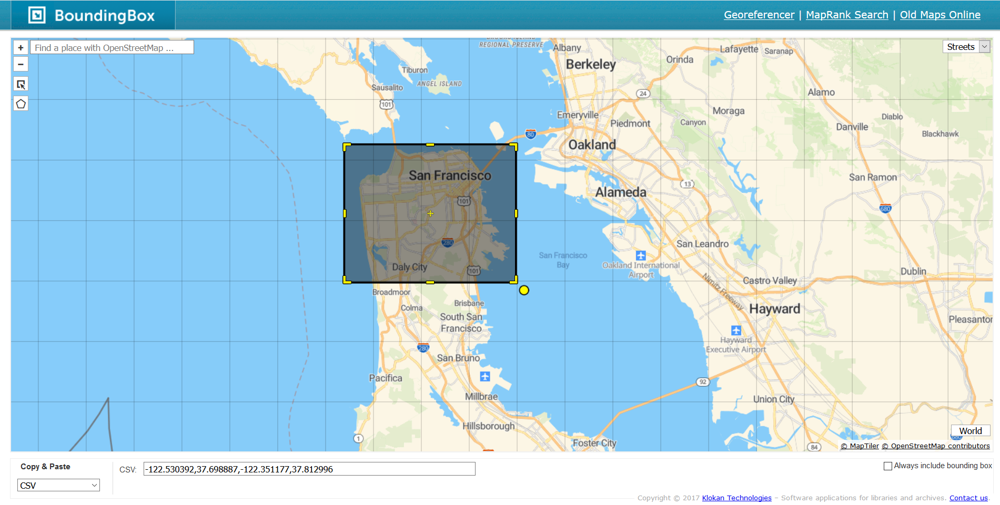
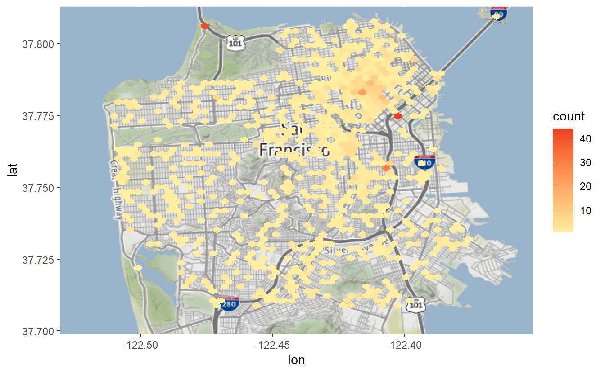

7 Hotspot maps
Hotspot maps are used to find where events (marijuana dispensaries, crimes, liquors stores) are especially prevalent. These maps are frequently used by police departments, particularly in determining where to do hotspot policing (which is focusing patrols on high-crime areas).
However, there are significant flaws with these kinds of maps. As we’ll see during this lesson, minor changes to how we make the maps can cause significant differences in interpretation. For example, determining the size of the clusters that make up the hotspots can make it seem like there are much larger or smaller areas with hotspots than there actually are. These clusters are also drawn fairly arbitrarily, without taking into account context such as neighborhoods (In Chapter 8 we’ll make maps that try to account for these types of areas). This makes it more difficult to interpret because even though maps give us the context of location, it can combine different areas in an arbitrary way. We’ll explore these issues in more detail throughout the lesson but keep in mind these risks as you make your own hotspot maps.
Here, we will make hotspot maps using data on suicides in San Francisco between 2003 and 2017. First we need to read the data, which is called “san_francisco_suicide_2003_2017.csv”. We can name the object we make suicide.
library(readr)
suicide <- read_csv("data/san_francisco_suicide_2003_2017.csv")
#> Parsed with column specification:
#> cols(
#> IncidntNum = col_double(),
#> Category = col_character(),
#> Descript = col_character(),
#> DayOfWeek = col_character(),
#> Date = col_character(),
#> Time = col_time(format = ""),
#> PdDistrict = col_character(),
#> Resolution = col_character(),
#> Address = col_character(),
#> X = col_double(),
#> Y = col_double(),
#> Location = col_character(),
#> PdId = col_double(),
#> year = col_double()
#> )
suicide <- as.data.frame(suicide)This data contains information on each crime reported in San Francisco including the type of crime (in our case always suicide), a more detailed crime category, and a number of date and location variables. The columns X and Y are our longitude and latitude columns which we will use to graph the data.
head(suicide)
#> IncidntNum Category Descript DayOfWeek Date
#> 1 180318931 SUICIDE ATTEMPTED SUICIDE BY STRANGULATION Monday 04/30/2018
#> 2 180315501 SUICIDE ATTEMPTED SUICIDE BY JUMPING Saturday 04/28/2018
#> 3 180295674 SUICIDE SUICIDE BY LACERATION Saturday 04/21/2018
#> 4 180263659 SUICIDE SUICIDE Tuesday 04/10/2018
#> 5 180235523 SUICIDE ATTEMPTED SUICIDE BY INGESTION Friday 03/30/2018
#> 6 180236515 SUICIDE SUICIDE BY ASPHYXIATION Thursday 03/29/2018
#> Time PdDistrict Resolution Address X Y
#> 1 06:30:00 TARAVAL NONE 0 Block of BRUCE AV -122.4517 37.72218
#> 2 17:54:00 NORTHERN NONE 700 Block of HAYES ST -122.4288 37.77620
#> 3 12:20:00 RICHMOND NONE 3700 Block of CLAY ST -122.4546 37.78818
#> 4 05:13:00 CENTRAL NONE 0 Block of DRUMM ST -122.3964 37.79414
#> 5 09:15:00 TARAVAL NONE 0 Block of FAIRFIELD WY -122.4632 37.72679
#> 6 17:30:00 RICHMOND NONE 300 Block of 29TH AV -122.4893 37.78274
#> Location PdId year
#> 1 POINT (-122.45168059935614 37.72218061554315) 1.803189e+13 2018
#> 2 POINT (-122.42876060987851 37.77620120112792) 1.803155e+13 2018
#> 3 POINT (-122.45462091999406 37.7881754224736) 1.802957e+13 2018
#> 4 POINT (-122.39642194376758 37.79414474237039) 1.802637e+13 2018
#> 5 POINT (-122.46324153155875 37.72679184368551) 1.802355e+13 2018
#> 6 POINT (-122.48929119750689 37.782735835121265) 1.802365e+13 20187.1 A simple map
To make these maps we will use the package ggmap.
library(ggmap)
#> Loading required package: ggplot2
#> Google's Terms of Service: https://cloud.google.com/maps-platform/terms/.
#> Please cite ggmap if you use it! See citation("ggmap") for details.We’ll start by making the background to our map, showing San Francisco. We do so using the get_map() function from ggmap which gets a map background from a number of sources. We’ll set the source to “stamen” since Google no longer allows us to get a map without creating an account. The first parameter in get_map() is simply coordinates for San Francisco’s bounding box to ensure we get a map of the right spot. A bounding box is four coordinates that connect to make a rectangle, used for determining where in the world to show.
An easy way to find the four coordinates for a bounding box is to go to the site Bounding Box. This site has a map of the world and a box on the screen. Move the box to the area you want the map of. You may need to resize the box to cover the area you want. Then in the section that says “Copy & Paste”, change the dropdown box to “CSV”. In the section to the right of this are the four numbers that make up the bounding box. You can copy those numbers into get_map()

sf_map <- ggmap(get_map(c(-122.530392,37.698887,-122.351177,37.812996),
source = "stamen"))
#> Source : http://tile.stamen.com/terrain/12/653/1582.png
#> Source : http://tile.stamen.com/terrain/12/654/1582.png
#> Source : http://tile.stamen.com/terrain/12/655/1582.png
#> Source : http://tile.stamen.com/terrain/12/653/1583.png
#> Source : http://tile.stamen.com/terrain/12/654/1583.png
#> Source : http://tile.stamen.com/terrain/12/655/1583.png
#> Source : http://tile.stamen.com/terrain/12/653/1584.png
#> Source : http://tile.stamen.com/terrain/12/654/1584.png
#> Source : http://tile.stamen.com/terrain/12/655/1584.png
sf_map
Since we saved the map output into sf_map we can reuse this map background for all the maps we’re making in this lesson. This saves us time as we don’t have to wait to download the map every time. Let’s plot the shootings from our data set. Just as with a scatterplot we use the geom_point() function from the ggplot2 package and set our longitude and latitude variables on the x- and y-axis, respectively.
sf_map +
geom_point(aes(x = X, y = Y),
data = suicide)
#> Warning: Removed 1 rows containing missing values (geom_point).
If we wanted to color the dots we can use color = and then select a color. Let’s try it with “forestgreen”.
sf_map +
geom_point(aes(x = X, y = Y),
data = suicide,
color = "forestgreen")
#> Warning: Removed 1 rows containing missing values (geom_point).
As with other graphs we can change the size of the dot using size =.
sf_map +
geom_point(aes(x = X, y = Y),
data = suicide,
color = "forestgreen",
size = 0.5)
#> Warning: Removed 1 rows containing missing values (geom_point).
sf_map +
geom_point(aes(x = X, y = Y),
data = suicide,
color = "forestgreen",
size = 2)
#> Warning: Removed 1 rows containing missing values (geom_point).
For maps like this - with one point per event - it is hard to tell if any events happen on the same, or nearly the same, location as each point is solid green. We want to make the dots semi-transparent so if multiple suicides happen at the same place that dot will be shaded darker than if only one suicide happened there. To do so we use the parameter alpha = which takes an input between 0 and 1 (inclusive). The lower the value the more transparent it is.
sf_map +
geom_point(aes(x = X, y = Y),
data = suicide,
color = "forestgreen",
size = 2,
alpha = 0.5)
#> Warning: Removed 1 rows containing missing values (geom_point).
This map is useful because it allows us to easily see where each suicide in San Francisco happened between 2003 and 2017. There are some limitations though. This shows all suicides in a single map, meaning that any time trends are lost.
7.2 What really are maps?
Let’s pause for a moment to think about what a map really is. Below, I made a simple scatterplot of our data with one dot per shooting (minus the one without coordinates). Compare this to the map above and you’ll see that they are the same except the map has a useful background while the plot has a blank background. That is all static maps are (in Chapter 9 we’ll learn about interactive maps), scatterplots of coordinates overlayed on a map background. Basically, they are scatterplots with context. And this context is useful, we can interpret the map to see that there are lots of suicides in the northeast part of San Francisco but not so many elsewhere, for example. The exact same pattern is present in the scatterplot but without the ability to tell “where” a dot is.

7.3 Making a hotspot map
Now we can start making hotspot maps which help to show areas with clusters of events. We’ll do this using hexagonal bins which are an efficient way of showing clusters of events on a map. Our syntax will be similar to the map above but now we want to use the function stat_binhex() rather than geom_point(). It starts the same as before with aex(x = X, y = Y) (or whatever the longitude and latitude columns are called in your data), as well as data = suicide outside of the aes() parameter.
There are two new things we need to make the hotspot map. First we add the parameter bins = number_of_bins where “number_of_bins” is a number we select. bins essentially says how large or small we want each cluster of events to be. A smaller value for bins says we want more events clustered together, making larger bins. A larger value for bins has each bin be smaller on the map and capture fewer events. This will become more clear with examples.
The second thing is to add the function coord_cartesian() which just tells ggplot() we are going to do some spatial analysis in the making of the bins. We don’t need to add any parameters in this.
Let’s start with 60 bins and then try some other number of bins to see how it changes the map.
sf_map +
stat_binhex(aes(x = X, y = Y),
bins = 60,
data = suicide) +
coord_cartesian()
#> Coordinate system already present. Adding new coordinate system, which will replace the existing one.
#> Warning: Removed 1 rows containing non-finite values (stat_binhex).
From this map we can see that most areas in the city had no suicides and that the areas with the most suicides are in downtown San Francisco.
What happens when we drop the number of bins to 30?
sf_map +
stat_binhex(aes(x = X, y = Y),
bins = 30,
data = suicide) +
coord_cartesian()
#> Coordinate system already present. Adding new coordinate system, which will replace the existing one.
#> Warning: Removed 1 rows containing non-finite values (stat_binhex).
Each bin is much larger and covers nearly all of San Francisco. Be careful with maps like these! This map is so broad that it appears that suicides are ubiquitous across the city. We know from the map showing each suicide as a dot, and that there are <1,300 suicides, that this is not true. Making maps like this make it easy to mislead the reader, including yourself!
What about looking at 100 bins?
sf_map +
stat_binhex(aes(x = X, y = Y),
bins = 100,
data = suicide) +
coord_cartesian()
#> Coordinate system already present. Adding new coordinate system, which will replace the existing one.
#> Warning: Removed 1 rows containing non-finite values (stat_binhex).
Now each bin is very small and a much smaller area in San Francisco has had a suicide. So what is the right number of bins to use? There is no correct universal answer - you must decide what the goal is with the data you are using. This opens up serious issues for manipulation - intentional or not - of the data as the map is so easily changeable without ever changing the data itself.
7.3.1 Colors
To change the bin colors we can use the parameter scale_fill_gradient(). This accepts a color for “low” which is when the events are rare and “high” for the bins with frequent events. We’ll use colors from ColorBrewer, selecting the yellow-reddish theme (“3-class YlOrRd”) from the Multi-hue section of the “sequential” data on the page.
sf_map +
stat_binhex(aes(x = X, y = Y),
bins = 60,
data = suicide) +
coord_cartesian() +
scale_fill_gradient(low = "#ffeda0",
high = "#f03b20")
#> Coordinate system already present. Adding new coordinate system, which will replace the existing one.
#> Warning: Removed 1 rows containing non-finite values (stat_binhex).
By default it labels the legend as “count”. Since we know these are counts of suicides let’s relabel that as such.
sf_map +
stat_binhex(aes(x = X, y = Y),
bins = 60,
data = suicide) +
coord_cartesian() +
scale_fill_gradient('Suicides',
low = "#ffeda0",
high = "#f03b20")
#> Coordinate system already present. Adding new coordinate system, which will replace the existing one.
#> Warning: Removed 1 rows containing non-finite values (stat_binhex).